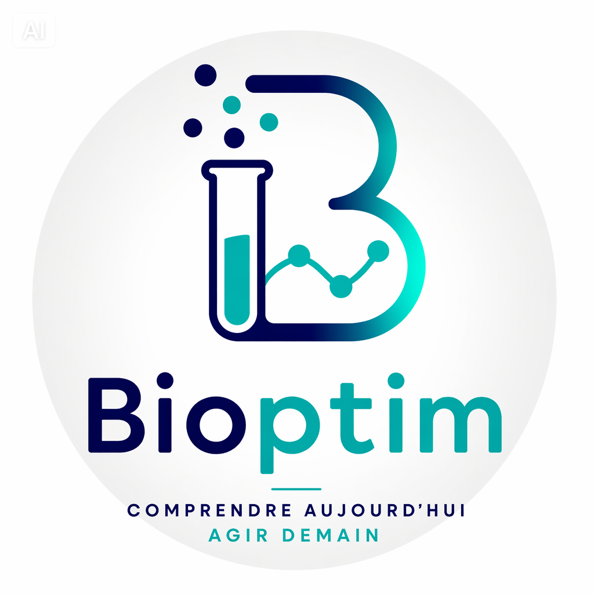

<header class="site-header">
  <nav class="nav">
    <a class="brand" href="index.html">
      
    </a>

    <button class="nav-toggle" aria-label="Ouvrir le menu" aria-expanded="false">☰</button>

    <div class="nav-links">
      <a href="index.html">Accueil</a>
      <a href="approche-labo.html">Notre approche</a>
      <a href="analyses-labo.html">Comprendre mes analyses</a>
      <a href="laboratoires.html">Pour les laboratoires</a>
    </div>
  </nav>
</header>

